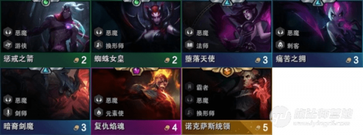

核心：
拿韦鲁斯，蜘蛛。C位韦鲁斯，火男。
前期打工可用VN配合韦鲁斯触发游侠，三贵族。
或者拿一手爆女狼人，后期可能拿三变形。
维鲁斯(火炮，羊刀，青龙刀，大天使) 纳尔(绿叉，龙爪，巨九) 火男 大天使，前期选怪：
恶魔除寡妇都不拿，给什么拿什么，不要刷。凑50元
「龙女 纳尔 豹女」
「德莱文 亚索 剑姬 肾」
「VN」
「寒冰 猪女」
「双子 铁男」
火男早则
「凯南 女巫」
第一轮选秀：
拿核心英雄(火男)>反曲弓>铲子
韦鲁斯必出火炮
装备给火男，韦鲁斯中期：
攒钱到50.购买剑魔、天使 此时可上4恶魔，剑魔、韦鲁斯、蜘蛛、莫甘娜 6人口时阵容： 可外挂，龙女、纳尔。 凑三变形。 或者 德莱文、亚索、剑姬、肾 组三剑师 或者 VN凑双游侠。 寒冰+猪女 凑双游侠双极地 双子+铁男 凑双游侠+暗影 如果火男来的早。 可以凯南+女巫凑三元素。7人口：
7人口则上火男。 搭配： 可以按6人口搭配。 有火男也可以上6恶魔+ （寒冰、VN、双子）凑游侠。8人口：
火男+统领